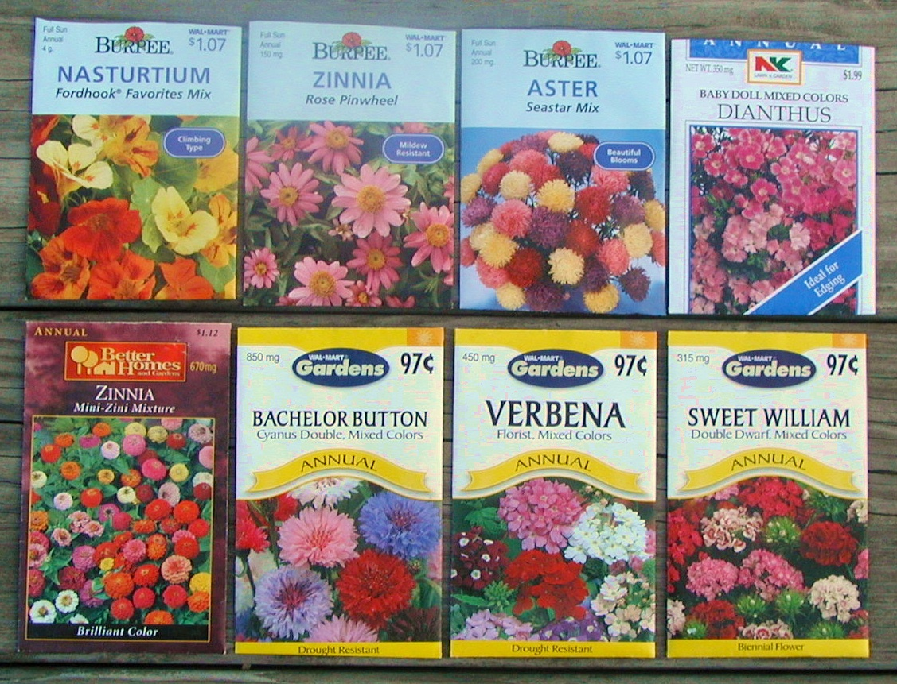
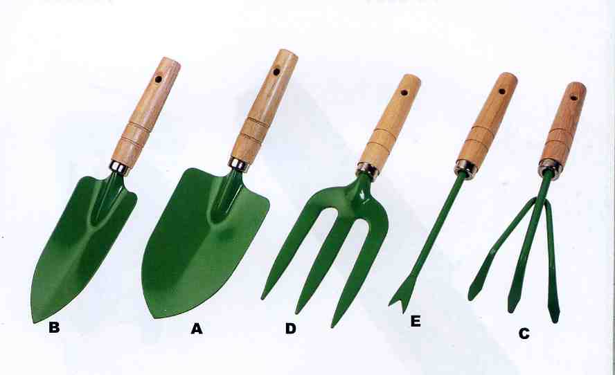
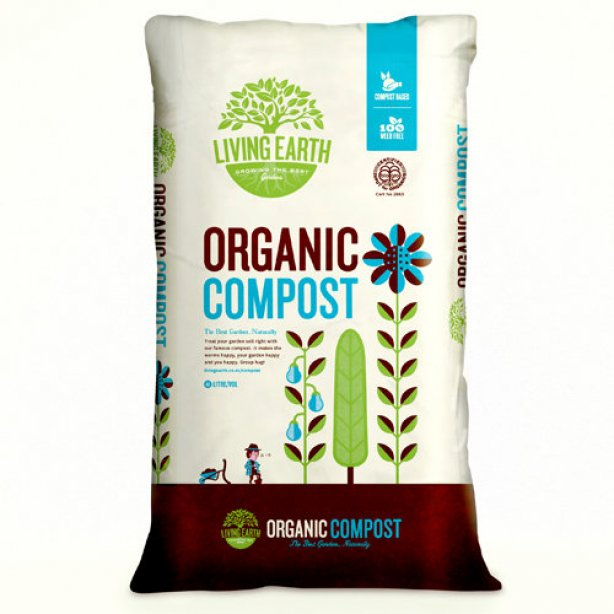

Flower Seeds
1 pack:$3 3 packs:$7.50 Variety:$10
Assorted packets of flower seeds. We can guarantee the quality of these seeds because they are the same ones that we use for our gardens! Many different varieties are available for purchase, from roses to forget me nots. These seeds have also been treated with a special formula to prolong their shelf life with no negative effects to the growing period!
Gardening Tools
$35
This kit of gardening tools includes everything you will need to start your very own garden. From hand-held shovels to rakes, this kit has everything you will need to clear, plant, and maintain the soil that your flowers will be planted in. Made from high-grade polymer and stylish bamboo, these tools are a great deal.
Organic Compost
$15
This organic compost is the same that we use here as Flowers R Us to treat our soil for the best yeild and protection that our products need. Organic compost adds beneficial soil microbes and nutrients to organic soil, adds organic matter, and increases water retention.